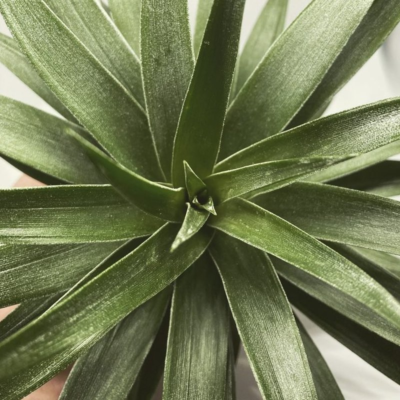
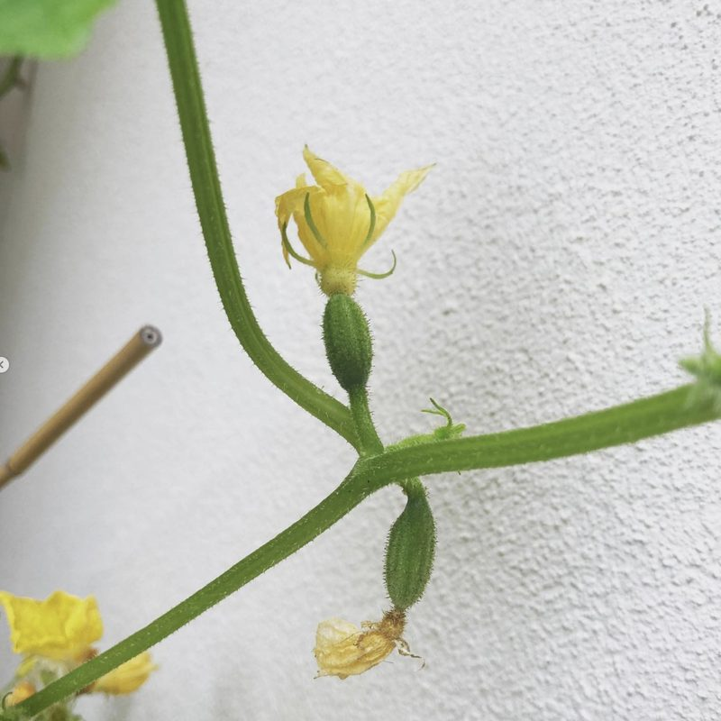
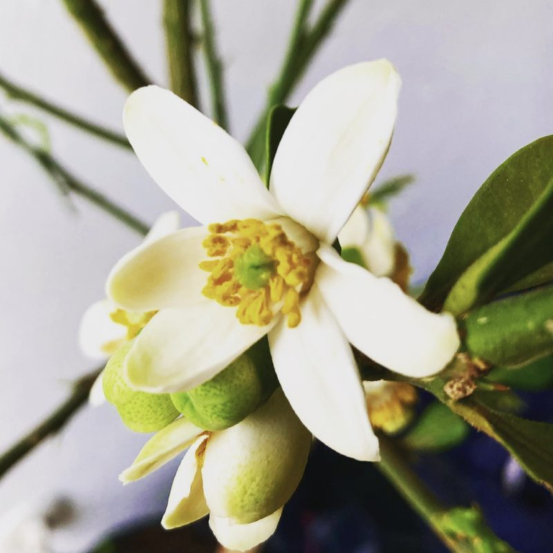
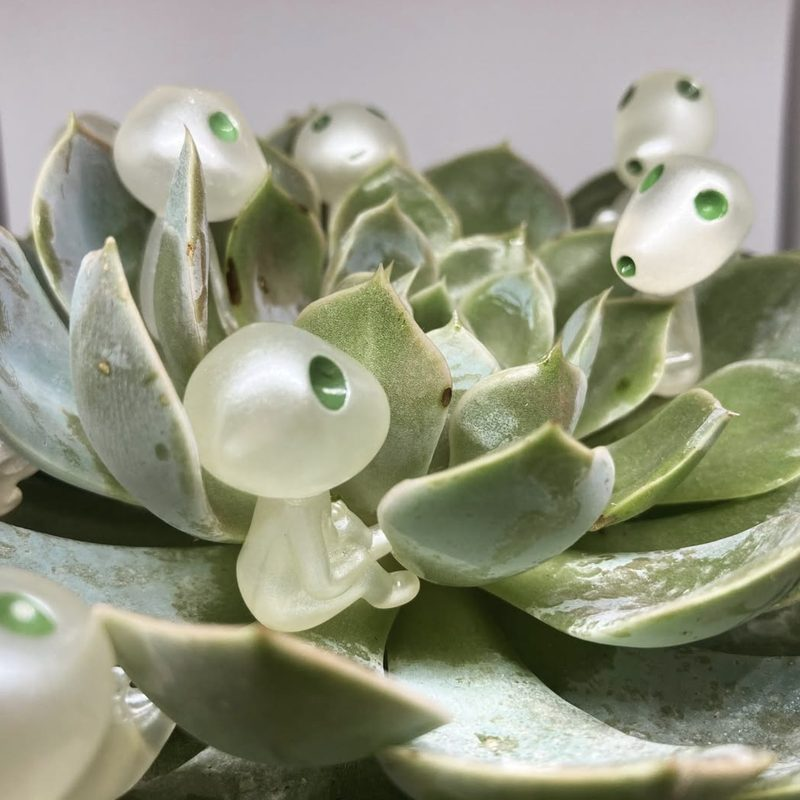
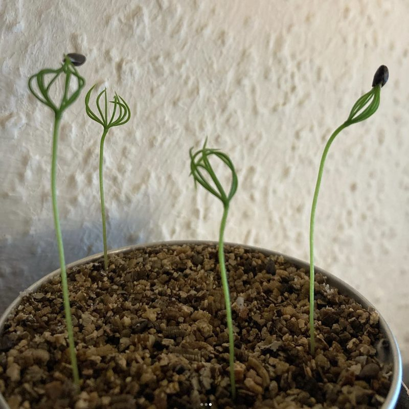

Meine Lieblingsorte in München, Pflanzen, Zeichnen und Sport.My favourite places in Munich, plants, drawing and sport.ჩემი საყვარელი ადგილები მიუნხენში, მცენარეები, ხატვა და სპორტი.
MünchenMunichმიუნხენი
Ich liebe diese Stadt. Seit über sieben Jahren führe ich Menschen durch München, als Nebenjob und aus Leidenschaft. Meine Lieblingsorte pflege ich in Google-Maps-Listen, die ich laufend aktualisiere.I love this city. For more than seven years I have guided people through Munich, as a side job and out of passion. I keep my favourite places in Google Maps lists that I update all the time.ძალიან მიყვარს ეს ქალაქი. შვიდ წელზე მეტია, რაც მიუნხენში ინდივიდუალურ ტურებს ვუძღვები, რაც ჩემთვის ერთდროულად საყვარელი საქმეც არის და გატაცებაც. ჩემს რჩეულ ლოკაციებს Google Maps-ის კოლექციებში ვუყრი თავს და ამ სიებს მუდმივად ვანახლებ.
Ein Granatapfelbaum, der sehr langsam wächst. Sei geduldig. Antippen, um neu zu starten.A pomegranate tree growing very slowly. Be patient. Tap to start over.ბროწეულის ხე, რომელიც ძალიან ნელა იზრდება. მოთმინება გამოიჩინეთ. დააკლიკეთ და ხე თავიდან დაიწყებს ზრდას.
In meiner Wohnung und auf dem Balkon wachsen Pflanzen, die mir Geduld beibringen. Dazu gehören Ewiges Glas, verschlossene Glasballons mit einem eigenen Wasserkreislauf, außerdem Weinreben, Efeu und seltene Aronstabgewächse. Auf Instagram zeige ich, was daraus wird.In my flat and on my balcony grow plants that teach me patience. They include Ewiges Glas, sealed glass carboys with their own water cycle, plus grapevines, ivy and rare aroids. On Instagram I show what becomes of them.ჩემს ბინასა და აივანზე იზრდება მცენარეები, რომლებიც მოთმინებას მასწავლიან. მათ შორისაა Ewiges Glas, ანუ დახურული მინის ბოთლები საკუთარი წყლის ციკლით, ასევე ვაზი, სურო და იშვიათი აროიდები. Instagram-ზე ვაჩვენებ, რა გამოდის მათგან.
Granatapfel, 2021 selbst aus einem Kern gezogen. Heute eine große Pflanze, nur Früchte gab es noch keine.Pomegranate, grown from a seed in 2021. A big plant today, just no fruit yet.ბროწეული, 2021 წელს თავად გავაღვივე კურკიდან. დღეს დიდი მცენარეა, უბრალოდ ნაყოფი ჯერ არ მოუსხამს.

TillandsieAir plantტილანდსია

Gurkenblüte am BalkonCucumber flower on the balconyკიტრის ყვავილი აივანზე

Pomelo-Blüte, die wunderbar geduftet hatPomelo blossom that smelled wonderfulპომელოს ყვავილი, რომელსაც საოცარი სურნელი ჰქონდა

Echeverie mit kleinen GästenEcheveria with little guestsეხევერია პატარა სტუმრებით

KiefernsämlingePine seedlingsფიჭვის ნერგები
KunstArtხელოვნება
Flaches Design, Vektorillustration, Minimalismus und Charakterzeichnung. Hier eine Auswahl meiner Arbeiten. Mehr gibt es auf Instagram.Flat design, vector illustration, minimalism and character art. Here is a selection of my work. There is more on Instagram.ვექტორული ილუსტრაცია, Flat დიზაინი და მინიმალისტური პერსონაჟები. ჩემი ნამუშევრების ნაწილი იხილეთ ქვემოთ, დამატებითი ილუსტრაციები კი Instagram-ზე დაგხვდებათ.
Sport muss mir Spaß machen. Diese sechs begleiten mich, manche schon mein ganzes Leben.Sport has to be fun for me. These six are part of my life, some of them for as long as I can remember.სპორტი უნდა მსიამოვნებდეს. ეს ექვსი ჩემი ცხოვრების ნაწილია, ზოგი კი იმდენი ხანია, რამდენიც თავი მახსოვს.
SchachChessჭადრაკი
Schach spiele ich, seit ich sechs bin. Wir hatten immer wieder Pausen, aber ich liebe das Spiel bis heute sehr.I have played chess since I was six. We have had our breaks over the years, but I still love the game very much.ექვსი წლიდან ჭადრაკის დაფასთან ვარ. მცირე შესვენებებიც მქონია, თუმცა თამაშისადმი ინტერესი არასდროს გამნელებია.
SchwimmenSwimmingცურვა
Schwimmen habe ich so früh gelernt, dass ich mich nicht daran erinnere, im Schwarzen Meer und in georgischen Bergflüssen. Deshalb kann ich im Becken stundenlang schwimmen, ohne müde zu werden. Es ist eine der wenigen Sportarten, auf die ich immer Lust habe.I learned to swim so young that I cannot remember it, in the Black Sea and in Georgian mountain rivers. That is why I can swim for hours in a pool without getting tired. It is one of the few sports I never mind doing.ცურვა იმდენად პატარამ ვისწავლე შავ ზღვასა და საქართველოს მთის მდინარეებში, რომ ზუსტად აღარც მახსოვს, როდის. ალბათ ამიტომ შემიძლია აუზში საათობით ვიცურო ისე, რომ ოდნავადაც არ დავიღალო. ეს იმ იშვიათ სპორტულ აქტივობებს შორისაა, რომლებიც არასდროს მბეზრდება.
RadfahrenCyclingველოსიპედი
Durch München fahre ich mit dem Rad, gut für die Umwelt und für die Gesundheit. Gelernt habe ich es ungewöhnlich spät, mit 20, nach meinem Umzug nach München. Mein heutiger Mann, damals mein Freund, hat es mir beigebracht wie einem Kind: Er versprach, nicht loszulassen, und ließ dann doch los. Es hat wunderbar funktioniert. Ich fahre bis heute dasselbe Rad, seit über zehn Jahren.I get around Munich by bike, good for the environment and for my health. I learned unusually late, at 20, after moving to Munich. My now husband, then boyfriend, taught me the way you teach a child: he promised not to let go, and then he did. It worked really well. I still ride the same bike, more than ten years later.მიუნხენში ველოსიპედით დავდივარ, რაც გარემოსთვისაც და ჯანმრთელობისთვისაც კარგია. უჩვეულოდ გვიან ვისწავლე, 20 წლისამ, მიუნხენში გადმოსვლის შემდეგ. ჩემმა ახლანდელმა ქმარმა, მაშინ ჯერ კიდევ ჩემმა შეყვარებულმა, ბავშვივით მასწავლა: დამპირდა, რომ ხელს არ გამიშვებდა, მერე კი გამიშვა. ძალიან კარგად გამოვიდა. ათ წელზე მეტია, იმავე ველოსიპედით დავდივარ.
LaufenRunningსირბილი
Ab und zu laufe ich. Meinen ersten offiziellen Lauf habe ich geschafft, 6,7 Kilometer beim Uferlos-Lauf im Mai 2026. Als Nächstes plane ich meinen ersten offiziellen 10-Kilometer-Lauf im Jahr 2027. Mit einem Mann verheiratet zu sein, der dreimal den kompletten München-Marathon (42,195 km) gelaufen ist, hilft bei der Motivation sehr.I run now and then. I finished my first official race, 6.7 kilometres at the Uferlos run in May 2026. Next, I am planning my first official 10k in 2027. Being married to someone who has run the full Munich Marathon (42.195 km) three times helps a lot with motivation.დროდადრო დავრბივარ. ჩემი პირველი ოფიციალური რბოლა უკვე გავირბინე, 6,7 კილომეტრი Uferlos-Lauf-ზე 2026 წლის მაისში. შემდეგი მიზანი 2027 წელს ჩემი პირველი ოფიციალური 10 კილომეტრია. მოტივაციაში ძალიან მეხმარება, რომ ჩემს ქმარს მიუნხენის სამი სრული მარათონი (42,195 კმ) აქვს გარბენილი.
TennisTennisჩოგბურთი
Tennis spiele ich seit 2024 und werde stetig besser.I started playing tennis in 2024 and I have been getting better ever since.ჩოგბურთს 2024 წლიდან ვთამაშობ და სულ უფრო კარგად გამომდის.
SkiSkiingთხილამურები
Skifahren habe ich 2026 in den deutschen Alpen angefangen. Seitdem arbeite ich daran, mit jeder Abfahrt sicherer zu werden.I started skiing in 2026 in the German Alps. Since then I have been working on getting better with every run.თხილამურებით სრიალი 2026 წელს გერმანიის ალპებში დავიწყე. მას შემდეგ ვცდილობ, ყოველ დაშვებაზე უფრო თავდაჯერებულად ვისრიალო.